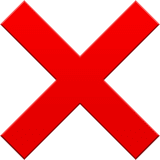

Каноничные названия
НЕ переводятся, но пишутся на русском языке.

КолонкаМен СпикерМен
ДжиЧеловек ДжиМен
Единственным исключеним являются
Скибиди туалеты, по причинам их полуканоничности в фанатской среде, а также официальным упоминанием сериала в группе автора в
ВК.
Астро туалеты также были названы в честь звёздных войнах, следовательно на них действуют другие правила перевода, имена выбираются исходя из русского перевода вселенной звёздных войн (так как они сами по себе это отсылка на данную вселенную)